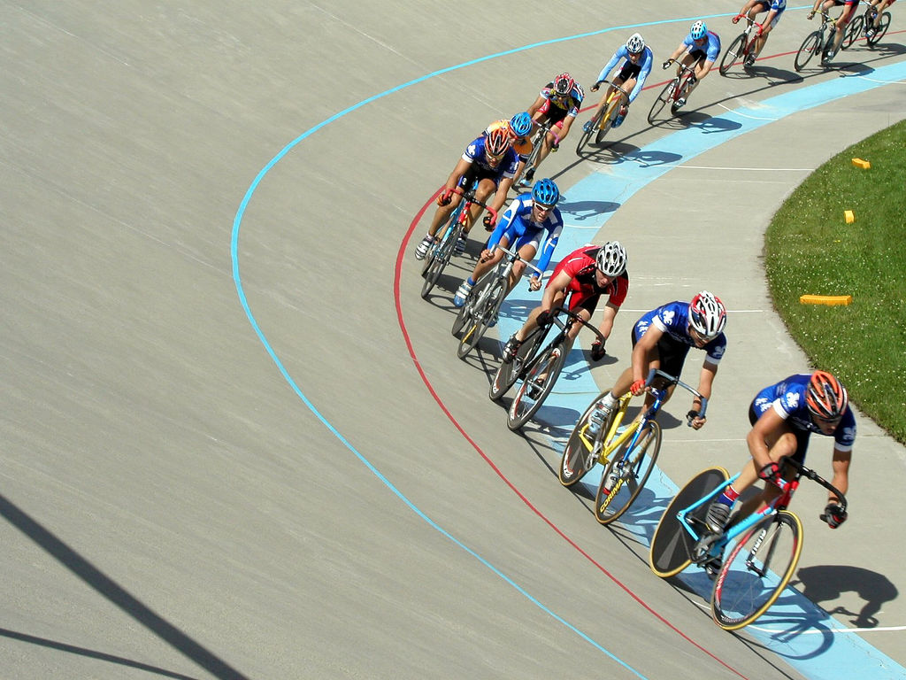

Cycling
About :
Cycling, also called bicycling or biking, is the use of bicycles for transport, recreation, exercise or sport.Persons engaged in cycling are referred to as "cyclists", "bikers", or less commonly, as "bicyclists".
Equipment
In many countries, the most commonly used vehicle for road transport is a utility bicycle. These have frames with relaxed geometry, protecting the rider from shocks of the road and easing steering at low speeds. Utility bicycles tend to be equipped with accessories such as mudguards, pannier racks and lights, which extends their usefulness on a daily basis.
Recreational
Bicycles are used for recreation at all ages. Bicycle touring, also known as cyclotourism, involves touring and exploration or sightseeing by bicycle for leisure. A brevet or randonnée is an organized long-distance ride.
Health Effects
The health effects of bicycling are a trade-off between the benefits of exercise versus the risks due to pollution, crashes, or injuries.